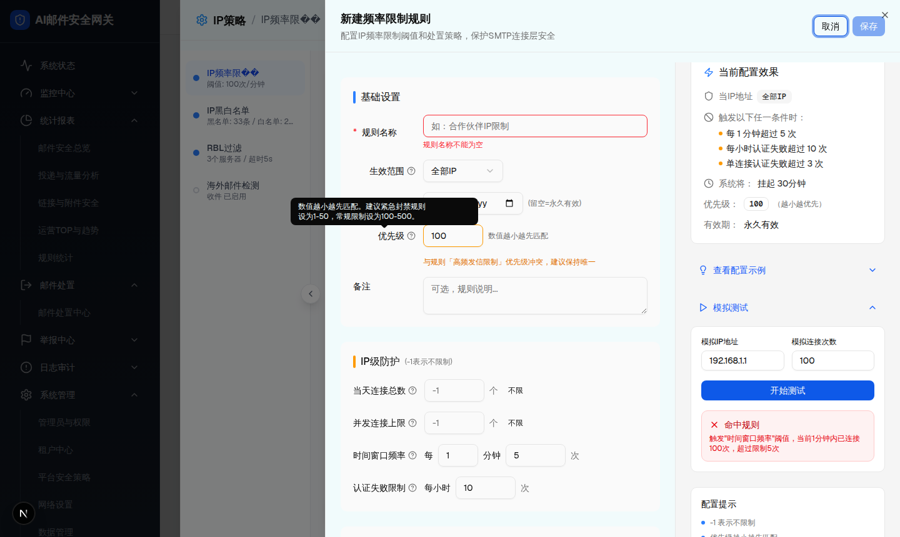
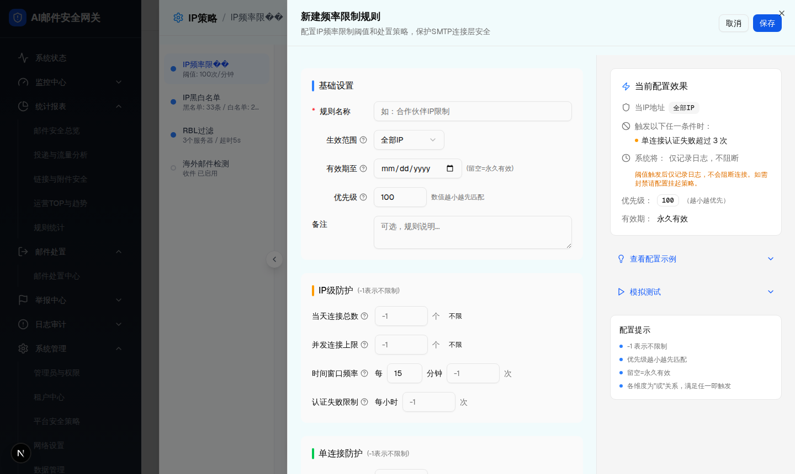

| 所属组件 | FrequencyRuleDrawer |
| 触发路径 | 层级0 IP频率限制规则列表 -> 点击“新增规则” |
| 尺寸 | demo 组件为 920px 右侧 Sheet；本规格预览按完整三栏展开展示，保留头部操作区、左侧表单区、中间滚动条、右侧预览/帮助区，并补齐可输入、可展开、可联动的审查交互。 |


| 区块 | 字段/控件 | 默认值 | 校验/行为 |
|---|---|---|---|
| 基础设置 | 规则名称、生效范围、IP地址/段、有效期至、优先级、备注 | 规则名称空；scope=全部IP；priority=100。 | 规则名称为空保存时报错；scope 切换到单IP/IP段/IP组时显示 IP 输入框，并同步右侧配置效果。 |
| IP级防护 | 当天连接总数、并发连接上限、时间窗口频率、认证失败限制 | daily=-1、concurrent=-1、window=15/-1、authFail=-1。 | “不限”按钮写入 -1；阈值大于 0 时追加到右侧触发条件。 |
| 单连接防护 | 命令错误上限、认证失败上限 | -1、3。 | 默认会在预览中显示“单连接认证失败超过 3 次”。 |
| 处置动作 | 当次阻断、IP挂起 | 拒绝连接、不启用。 | 挂起不启用时预览提示仅记录日志，不阻断连接。 |
| 底部辅助 | 当前配置效果、查看配置示例、模拟测试、配置提示 | 示例/模拟测试折叠。 | 点击进入层级4。 |
| 比对项 | demo 实际 DOM | 提取 HTML | 是否一致 |
|---|---|---|---|
| 根节点 | div[role=dialog].w-[920px].sm:max-w-[920px] | 嵌入同一 outerHTML | ✅ 一致 |
| 子节点/节点数 | directChildren=3，nodeCount=223。 | 3 / 223。 | ✅ 一致 |
| 可交互控件 | Input、Select、Textarea、Button、折叠项 | 运行态提取块保留全部原生控件和关键属性。 | ✅ 一致 |
| 关键文本 | 新建频率限制规则、取消、保存、基础设置、IP级防护、单连接防护、处置动作、当前配置效果 | 全部包含 | ✅ 一致 |